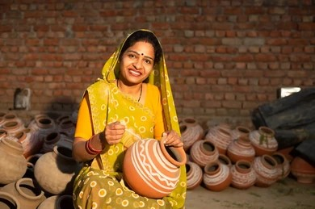
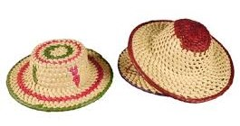
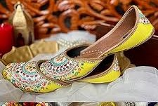
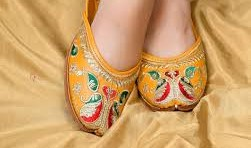
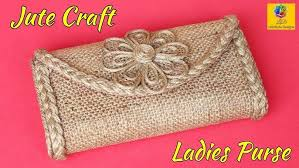

Welcome to Women Section
Handmade suits, chunnis, and accessories crafted with love just for you.
Wear handmade embroidery that speaks your personality.
Our handmade collection adds a touch of tradition with a modern vibe.
Trending Handmade Products are here




